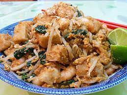

Odin Recipes

Description
Char Koay Kak is a popular Penang street food made with stir-fried rice cakes, preserved radish, eggs, and a medley of flavorful seasonings. It's a delicious and savory dish with a unique texture.
Ingredients
- 500g rice cakes, sliced
- 150g Chinese sausage, sliced
- 150g chives, cut into sections
- 3 eggs
- Preserved radish (choy poh)
- Dark soy sauce
- Light soy sauce
- Chili paste (optional)
Steps
- Soak preserved radish in water, then drain.
- Heat oil in a wok, add Chinese sausage, preserved radish, and rice cakes. Stir-fry until fragrant.
- Push ingredients to one side, crack eggs into the wok, and scramble.
- Add dark soy sauce, light soy sauce, and chives. Stir well.
- Add chili paste if desired. Stir-fry until everything is well combined.
- Serve hot and enjoy!
Click here for home page